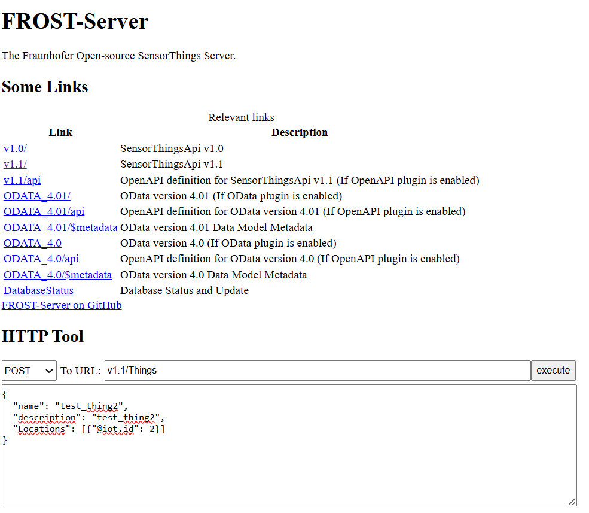
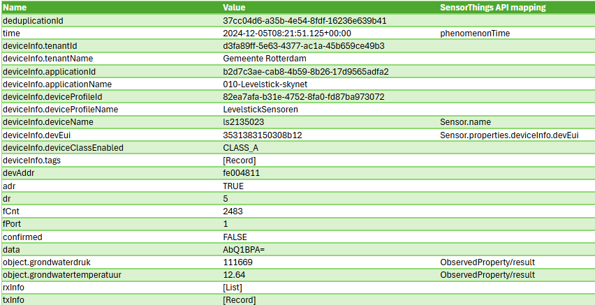
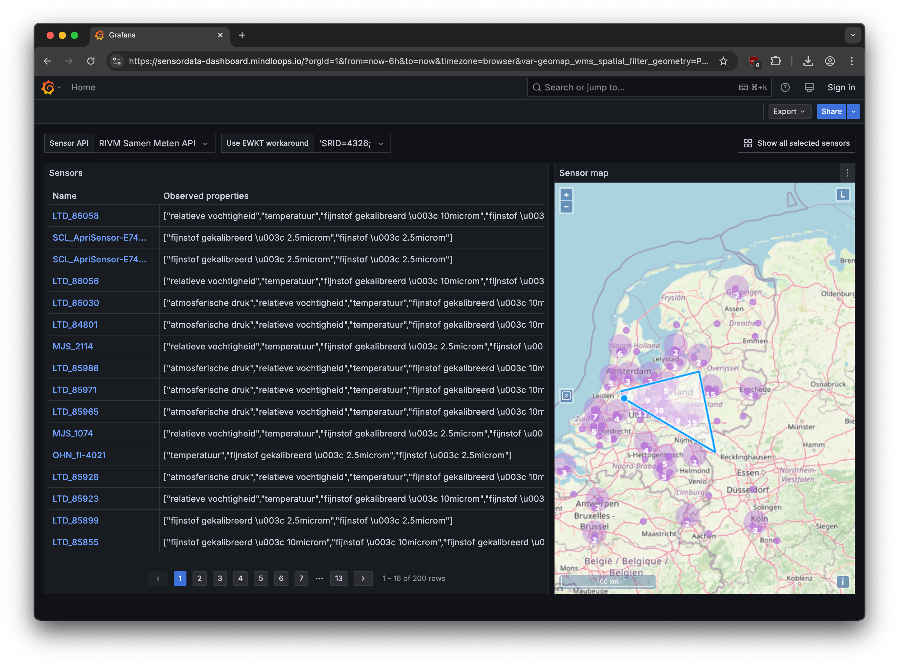
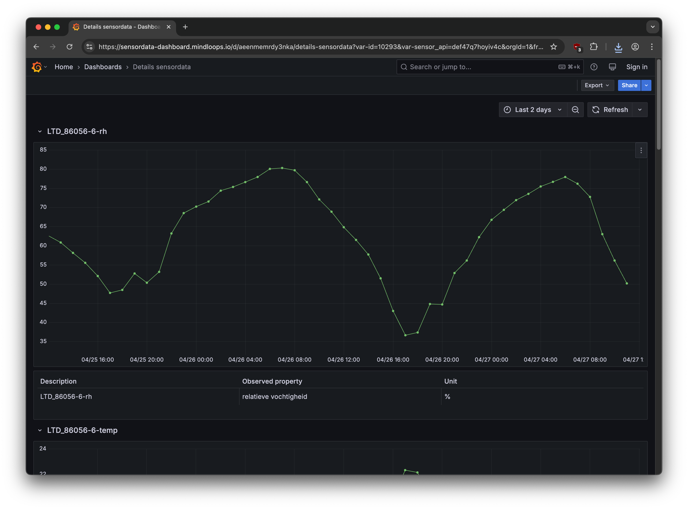
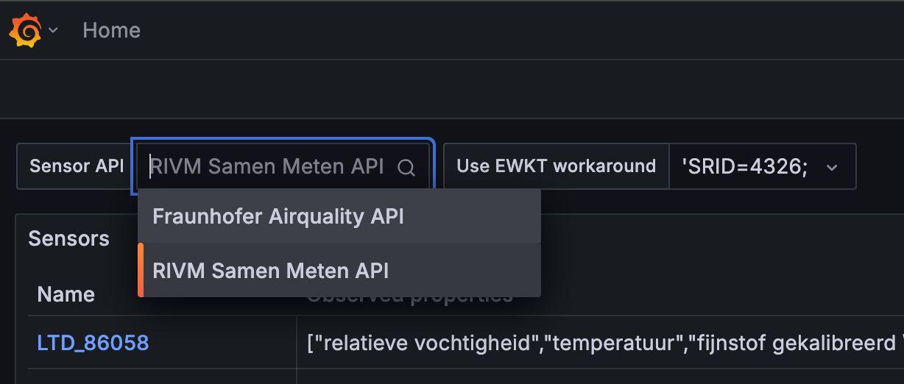
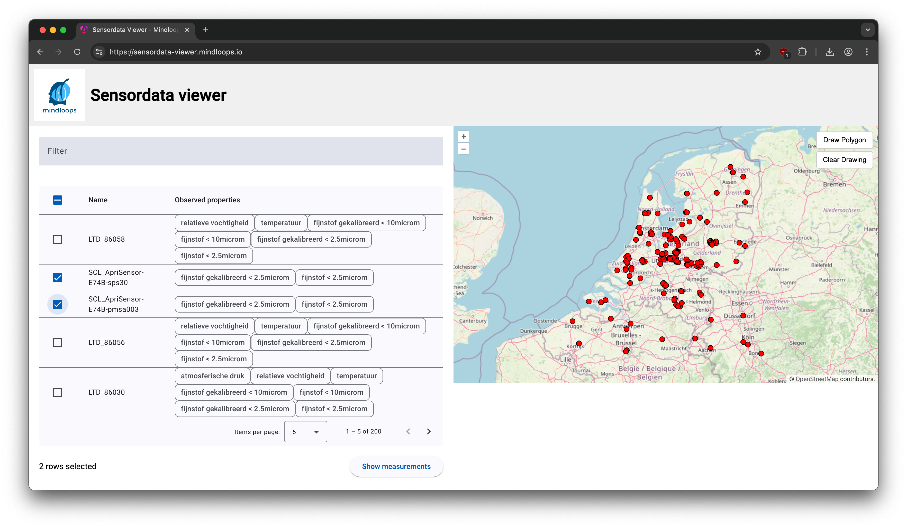
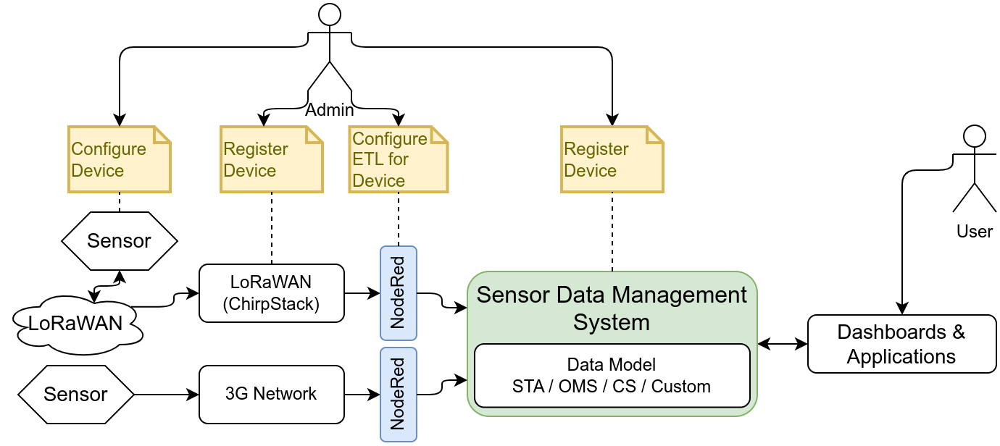

This is the 2025 Geonovum testbed sensordata report. It contains the results of Geonovum's investigation into OGC sensordata standards. This was done with market participation. Using a public tender process, three parties were selected to investigate one research question each:
Nelen & Schuurmans investigated Communicating with a Collection of sensors
This report contains their detailed findings. Geonovum started this testbed to learn more about the applicability of OGC sensordata standards in the Dutch public sector. Now that the testbed has concluded, the possibility of making one or more of these standards mandatory seems feasable, although there are some findings that need further investigation. An important point to be addressed is the mapping of the internal data model of local vendors to the Observations, Measurements and Samples based model of the OGC standards. Also, there is a need for gaining more experience in client use cases. For Initial device registration a viable and efficient solution was shown, which may eventually be proposed as an extension to the OGC standards; further experiments with sensors from Dutch stakeholders are a next step. Finally, before taking further steps towards a mandatory standard, Geonovum will consult with Dutch public sector stakeholders on the outcome of this testbed.
Status of this document
This is the definitive version of this document. Edits resulting from consultations have been applied.
1. Introduction
Sensordata is becoming increasingly important in the Dutch public sector. Smart city initiatives, citizen
science projects as well as nationwide sensor networks for specific tasks (e.g. environmental monitoring)
have been increasing the amount of available sensordata. Being able to make sense of this data and
combining data from diverse source in applications such as digital twins is increasing the need to standardize
sensorplatforms and sensordata.
1.1 Goal of the testbed
We want to explore how standards for sensors can help the public sector better organize and leverage their
available sensordata and sensorplatforms.
We want to address these questions based upon typical use cases and user questions we have identified.
Geonovum, in line with its mission, is keen to get the answers; and it seeks to involve the market to do so.
The actual questions and issues to be addressed are described in this document, as well as the report on the answers, combined into three research topics.
The results of the testbed are intended to contribute to expand and innovate the Dutch public sector Spatial
Data Infrastructure in a direction that takes into account the possibilities in the market today. Based on the
outcome of this testbed we may take steps to make one or more sensor related standards mandatory within
the Dutch public sector, in order to promote interoperability between sensor networks and encourage reuse.
To this end implementations of standards realized within this testbed will be kept online and available for
further experimentations for 6 months after the testbed ends.
1.4 Use cases
This section describes use cases that were employed within the testbed.
1.4.1 Use case #1: RIVM air quality
1.4.1.1 Use case #1A
RIVM has the obligation, according to the EU legislation INSPIRE, to deliver the hourly air quality data for
specific depositions. This data is generated out of the AQ database on a hourly basis, harvested with a
python script and saved on the specific SOS inspire webserver.
The SOS software was created by 52North as a tool for ArcGIS Server and adapted for the RIVM
to operate on a Apache Tomcat instance as Open Source Software tool.
Since the implementation of the software in 2013 this software has never been down except for maintenance.
To be future proof as an organization and to comply to the newer Open Standards available, RIVM
would like to investigate the options, possibilities and risks to replace their SOS instance with a OGC
SensorThings API standard, OGC connected systems API or even better an Observations Measurements and
Sampling (OMS) solution.
1.4.1.2 Use case #1B
In an effort to support citizen science in The Netherlands, RIVM also hosts the ‘Samen Meten’ platform: a
data infrastructure that brings together official hourly air quality measurements and sensor-based civil
measurements of local air quality. These sensor data are currently made available to the public through a
STA v1.0 API server. A brief introduction to this service may be
found at one of the following two webpages:
RIVM offers this service as an example of how a STA can be used in practice and as a dataset to query or import
as part of this testbed. Further, RIVM would like to investigate how this API service could be improved to
provide better metadata, for instance through an implementation of the STAplus extension or an exploration of appropriate metadata standards.
1.4.2 Use case #2 Municipality of Rotterdam
The municipality of Rotterdam has a multitude of sensors transmitting on LoRa via chirpstack that produce
raw JSON. These sensors measure groundwater levels, soil moisture, soil Ph and temperature, water leakage;
in addition there are people counting sensors as well as 12-1 weather stations, measuring 12 weather
related parameters. These are documented in more detail (including example JSON) in an attachment
provided with this invitation to tender. Rotterdam would like to gain experience in having these sensors exposed through interoperable standards such
as Sensorthings API or connected systems API.
1.5 Research questions
The research topics, although overlapping in scope, are specifically chosen to address different leading
perspectives and goals. Below these are spelled out, for each of the three research topics.
1.5.1 Research topic #1: Communicating with a collection of sensors
There are many use cases where one type of sensor is placed in many locations. There is great utility in
querying all of these sensors at the same time with one simple operation. For example "give me all current
temperature readings from the collection of temperature sensors in the municipality of Rotterdam". We want
to know how this can be achieved using different OGC API standards and what the benefits and negatives
for each standard are in practice.
1.5.2 Research topic #2: Visualisation & analysis
An important aspect of working with sensor data is, of course, being able to get the data and load it into an
application for visualisation and analysis. This research question is about demonstrating that this works,
both in a web viewer and in a dashboard application (e.g. Grafana).
1.5.3 Research topic #3: Initial device registration
Initial device (aka Thing) registration in a system is not well documented or standardized and hinders
uniformization and encourages bespoke solutions.
‘Things’ are made in the factory by the thousands, all with the same firmware specified by the manufacturer.
The Things have several sensors (possibly different ones) on - board that will measure values. When the
thing is first turned on, it will try to connect to a service (over eg a LoRaWAN Network or the internet over
a 3G network) specified in the firmware.
When this connection is established, the thing must register itself with that service. The thing ‘comes ashore’
for the first time.
1.6 Reading guide
The rest of this document contains the results of all three research topics, written by the participants. It ends with the Conclusion chapter, which describes the main findings and the way forward as perceived by Geonovum.
2. Topic 1: Communicating with a collection of sensors
This section is non-normative.
2.1 Content
This report describes the research that is done for research topic 1 in the Geonovum Testbed Sensordata. Part of the research was making a proof of concept, which is available on:
The implementation of sensors for measuring things in the field has grown over the years and will continue growing. It is a challenge to handle the vast amount of collected data and keep grasp on the internal relationships within the data.
Different uses of the data require different views on them. Registration of measurements is done based on the sensor that collects them. For other purposes, e.g. for dashboards or digital twins, you are often interested in the current situation for a collection of features of interest that are measured by sensors.
It is also interesting to see how such an API standard fits to existing applications. If an existing application would have to expose its data through a new standard, what difficulties can be foreseen?
2.3 Goal
OGC has multiple API standards that cover observations and measurements. Geonovum is interested in the applicability in the Dutch domain of two of these: OGC SensorThings API (STA) and OGC Connected Systems API (CS API).
In this research topic the focus is on what options there are to query combinations of observations. How to store data based on a datafeed from a sensor platform and how to expose them through an API, supporting different uses.
2.4 Use case
The municipality of Rotterdam would like to see their live sensordata exposed using standards such as SensorThings API and Connected Systems API and learn what this would mean in practice. For instance how would groundwater levels, which are derived by calculation from the raw sensordata, be exposed. How would sensors that measure multiple values (12-1 weather station) be represented. Can the sensors benefit from being exposed in an Observations Measurements and Sampling (OMS) solution?
They are also looking for a scalable and accessible solution to store their sensor data in and make it available for further use. For groundwater levels Nelen & Schuurmans Lizard data warehouse is already used as a system integrator. What role can the OGC standards play in data exchange between systems?
2.5 Methodology
We first familiarized ourselves with the standards at hand by doing a desk study on available documentation. What concepts are used, how are datamodels designed and what is the setup of the API's?
Next, we set up a proof of concept application that makes use of the data made available by Rotterdam and process it through the API standards to our own data warehouse Lizard. By using the API we learn:
How the mapping between sensor input and the API datamodel needs to be configured
What query options there are in the API standard
How API outputs can be shaped to the desired output for different use cases
What mapping is needed to supply data from the API standard to another data platform
Unfortunately, we didn't succeed in installing the CS API, because there were technical issues with the available docker images of the 52North package (reported here). For the functional comparison with STA we used an existing implementation based on OGC CS API Docs, which refers to the
GeoRobotix OGC testbed 18 CS API.
2.6 Comparison of OGC API standards
Although they have an overlap in underlying definitions, the two API standards have slightly different backgrounds and therefore different design choices. STA focusses on IoT devices where CS API is more generically applicable. Also, there is a difference is age. The first version of STA has been approved in 2016, while CS API is currently still in draft.
The relevant aspects for comparison for this research topic are:
Datamodel: The datamodel design determines to a large extent how an API can be interacted with and how incoming data should be mapped. What entities should be configured to set up a usable system? Which entity relations are required?
API setup and capabilities: How can data be retrieved? What options are available to shape the output to a desired format?
Items that are explicitly excluded from the comparison are:
Tasking Core/Actuators: The research is about sensor observations and not about the capabilities to interact with sensors.
API extensions: STA for instance has a PLUS extension. We will only consider this in the assessment of possible ways to improve the applicability of the standards.
Measured results are stored as Observations with Datastreams as their main grouping mechanism.
There are entities to describe the object that is observed with/from.
An Observation concerns a Feature of Interest.
Differences relevant to this research topic:
The entities Sensor and Thing from STA are generalized in CS API to the entity System.
In STA the UltimateFeatureOfInterest is only linked to the Observation. CS API also has a more direct link from the UltimateFeatureOfInterest to a Datastream, through the SamplingFeature.
2.6.2 API setup and capabilities
The two standards are both based on REST, but have different capabilities when it comes to querying data and shaping responses. Our focus is on Observations, as those are most relevant to use in applications.
Relevant similarities:
Support for limiting the list of returned properties per object with the select option. This is useful to reduce the size of the response, especially for use cases in e.g dashboards.
Neither standard has built-in aggregation options, which can have a lot of added value when it comes to using data in other applications.
Relevant differences:
CS API by default returns all related entities of a requested object. STA only covers properties of the selected entity, but has options to extend on that with expand to add related entities.
STA supports more forms of nested filtering. This reduces the number of queries that need to be done to find the right collection of results.
STA is based on OData 4.0, a protocol for requesting entities. This may be a complicating factor when it comes to applying STA to an extisting application, compared to CS API, which is based on OGC API Common and API Features.
In Chirpstack an HTTP-feed has been set up, sending messages from a group of sensors to an external URL. We've set up a service that receives this feed and processes the input as log messages.
2.7.2 Step 2: Setting up FROST-server with initial configuration
We've installed the FROST-server in our staging environment. This worked pretty much out-of-the-box. Mostly, some settings needed to be changed to adjust authentication and authorisation (see docker-compose.yml).

Figure 3Example of a POST request in the FROST-server interface.
With the service running we could use the API to configure all required entities to process the Chripstack feed. The following entities needed to be configured:
Sensors (with name that corresponds to the device name in Chirpstack)
Locations
Things
ObservedProperties (with name that corresponds to observation in Chirpstack)
Datastreams
We chose not to configure FeaturesOfInterest, because STA generates and reuses those automatically based on the Thing related to the Datastream an Observation is POSTed to.
2.7.3 Step 3: Processing sensor observations in STA
The Chirpstack feed consists of JSON with a couple of relevant attributes that we need to process the Observations. The table shows an overview of the typical message content in the JSON.

Figure 4Mapping of Chirpstack message attributes to STA entity properties.
For each incoming message we check whether it contains observations. If so, we try to find the Datastream based on the Sensor and the ObservedProperty. If it is found, the Observations are POSTed to that Datastream.
2.7.4 Step 4: Configuring Lizard
The datamodel of Lizard for timeseries has quite some similarities to that of Datastreams. The main difference is a lack of differentiation between Sensor/System, Thing and FoI. This is "flattened" to a Location, optionally linked to an Asset.
For the mapping to Lizard we initially used the FeatureOfInterest in combination with ObservedProperty to map Datastreams to Lizard Timeseries. This turned out to be unpractical, due to the position of FoI in the STA datamodel. As it is only related to Observations it becomes harder to find the related Datastreams. Instead, we decided to use the Thing as point of entry for the mapping. This means that Lizard location codes where changed from test_location# (FoI name is taken from the Location) to test_thing#, so that the mapping could be switched to STA Things.
Observation_types were registered corresponding to STA ObservedProperties and for each Datastream a Timeseries is created. The last step is the creation of assets (i.e. groundwaterstations and measuringstations, depending on the type of measurements in Chirpstack). Assets are not required for the processing of Observations, but they serve as a represenation of locations on the map in the Lizard Viewer.
2.7.5 Step 5: Processing observations from STA to Lizard
Based on the configuration in STA and Lizard and the mapping of Datastreams to Timeseries the Observations are retrieved from STA and POSTed to Lizard REST API. The sequence of requests to STA that are done to find the right Datastream and collect the Observations are:
Find the Thing corresponding to the Lizard location: /Things?$filter=name eq {liz_loc_code}
Find the ObservedProperty corresponding to the Timeseries observation_type: /ObservedProperties?$filter=name eq {liz_ts_obstype}
Find the Datastream corresponding to the Timeseries: /Datastreams?$filter=ObservedProperty/id eq {ObservedProperty_id} and Thing/id eq {Thing_id}
Retrieve all new Observations for that Datastream: /Observations?$filter=Datastream/id eq Datastream_id and phenomenonTime gt {liz_ts_end}
2.7.6 Learnings from PoC and comparison with CS API
We were successful in mapping data through the system the way we intended to do. STA has sufficient filter options to get the desired Observations from the API for data supply to another application. Because of the different entity relations it is important to choose the right "perspective" from which you do the mapping.
Translating this workflow the CS API, based on available documentation, we foresee no issues implementing CS API in the same fashion. Mapping from Chirpstack to CS API would be based on System and ObservedProperty. For the mapping to Lizard we could in this case use the FeatureOfInterest, as in CS API it is linked to the Datastream, again in combination with the ObservedProperty.
2.8 Potential of API extensions for working with collections of Observations
There are two possible extensions that support grouping of Observations to improve the accessibility to similar Observations. This is relevant for the use of these API's in the support of applications like dashboards or digital twins, where you often want to know the state of a collection of objects at a certain time. The original setups of the API standards lack specialized filter or aggregation options to retrieve a single value in time per object, given that in most cases Observations are not neatly lined up in time.
STA PLUS has an ObservationGroup entity which can contain "a bag of Observation and/or relations". This extension is scoped on citizen science and focusses on the division of data under licenses and mechanisms to share data. In practice it is for example used to relate samples of water quality done in the same water body. It is not modeled and optimized to support more generic applications.
The ObservationCollection in the Observations, Measurements and Sampling (OMS) model does have a generic scope and therefore a little less overhead in attribution.
The suitability of these grouping mechanisms for our purpose seems questionable. One would have to maintain a registration of collections per relevant timestep that might be used by e.g. a dashboard. This will take a huge administrative workload to keep up to date. It makes much more sense to put an effort in aligning Observations in time, so they can be retrieved using basic filter options.
2.9 Conclusions
On implementability of the API standards:
The API standards are applicable in the Dutch domain, at least as stand-alone applications. Data can be exchanged between these standards and other applications.
Suitability depends on the purpose of an application. If it relies on information about the sensors/systems, e.g. for validation of Observations, it makes sense to use them. If not, these standards come with quite some overhead in entity relationships and configuration.
Due to overhead in the datamodels there is a risk of scalability issues for larger data systems. There is a limit to what can be solved by clever indexes, buckets and partitioning of Observations, their different possible types of results and entity relations.
Full support of these standards by existing data warehouse applications like Lizard, e.g. Delft-FEWS and HydroNET, will be tricky due to a mismatch in mapping of entities between datamodels. It would probably require specific boundary conditions for how data is stored and metadata is configured to make either API standard applicable for both data ingestion and publication. STA has some additional disadvantages because of the use of OData.
On communication with a collection of sensors:
STA supports query options to expand API responses with information of related entities and both have a select option to limt the response size. This can be used for dashboarding applications to retrieve results for multiple objects.
The accuracy of temporal queries on Observations depends on the measurement regime of a collection of sensors and the way properties like phenomenonTime and resultTime are stored. If not lined up neatly on rounded times and intervals, there is a big risk of returning multiple results per Datastream, which may be hard to deal with by the retrieving application.
Based on documentation, CS API has one advantage over STA when it comes to querying Observations for collections of Datastreams: The filter option latest on phenomenonTime and resultTime. Unfortunately, in the implementation that we tested with this did only work when requesting Observations for a single Datastream, which makes it irrelevant for dashboarding.
A mechanism like ObservationCollections makes querying groups of Observations much easier. Disadvantage is that it requires a lot of additional administration, to group Observations like that and to keep Collections up to date in time. For operational services this will likely give a lot of overhead.
2.10 Discussion
We've discussed the outcomes of our research with specialist Hylke van der Schaaf from research topic 3. He had a couple of interesting comments:
In version 2 of STA FeaturesOfInterest can be related to Datastreams directly, overcoming the difficulties we had mapping the Observations based on that perspective in comparison with CS API.
FROST-server logs queries that take longer than a certain treshold. This information can be used to improve database indexes and other data optimizations. Of course, the larger the storage size and the wider the use of an implementation it will become harder and harder to fine solutions for potential performance issues. He has good experiences with implementations that contain up to 850 million Observations.
2.11 Recommendations
For future research on the applicability of these and similar standards we have the following recommendations:
Does the potential applicability reach further than stand-alone systems? To what extent could existing applications adopt these standards, e.g. when it comes to data exchange through underlying standards?
What role could temporal aggregation of observations play? This is something that is missing in these standards but is widely used in the field of timeseries data.
3. Research question 2: Visualisation & Analysis
This section is non-normative.
3.1 Goal
An important aspect of working with sensor data is, of course, being able to get the data and load it into an
application for visualisation and analysis. This research question is about demonstrating that this works,
both in a web viewer and in a dashboard application (e.g. Grafana).
Demonstrate the following steps in both types of application:
The user searches for and finds different sensors that offer sensor data;
The users selects a subset of measurements based on several criteria. The following criteria must
be demonstrated as a minimum:
most recent measurement of one sensor;
all measurements at a certain location within a certain time period;
most recent measurement of a selection of sensors that are located within a bounding box.
The application loads the selected measurements;
The user can view and use the measurements within the application.
3.2 Use case
RIVM offers an existing SensorThings API (STA) endpoint (https://api-samenmeten.rivm.nl/v1.0) which can serve input for analysis and visualization demonstrations. Further, we are interested to investigate if this endpoint offers
sufficient data and metadata detail to support connections to third party dashboards, or if (small) tweaks are required in order to enable easier integration of the offered data with other tools.
3.3 About the researchers
This research is conducted by Mindloops BV. Mindloops is a boutique software consultancy specializing in software engineering. For nearly 10 years, Mindloops has proudly delivered solutions to clients such as the Dutch Police, the Dutch Railways (NS), The Netherlands’ Cadastre, Land Registry and Mapping Agency (Kadaster) and Dutch National Road Data Portal (NDW). Together with our clients and partners, Mindloops is committed to making a positive impact on society. Mindloops has a proven track record in building and running high-quality, mission-critical, bespoke software designed to last and evolve for decades. These data-intensive systems often require extensive integration with other systems, as well as data visualization.
3.4 Design and approach
The viewers communicate with a SensorThings API and allow users to select sensors and view measurements. As a data source we used the RIVM SamenMeten SensorThings API. To prove that our viewer is able to handle SensorThings API in a generic way we’ve also added the Fraunhofer Airquality SensorThings API (as a bonus).
We’ve applied a risk-driven approach in which we tackled the most complex things early on. This maximises the desired outcome within the available time. Also we used an iterative and agile approach with short feedback cycles to validate our results, which aligned with the bi-weekly meetings with GeoNovum.
3.5 Results
We've implemented the requested features in a dashboard application and web viewer. Both are accessible on a publicly accessible URL, which will be available for demonstration purposes until 31-10-2025.
All source code needed to run both solutions in a local environment is delivered as open source under MIT license.
See the README in each repository for details.
Selecting a specific sensor
Figure 7Selecting a specific sensor
Select an area on the map and list sensor data.

Figure 8Select an area on the map and list sensor data
Show measurements of one or more sensors

Figure 9Show measurements of one or more sensors
Switch API source to use. Note: for the RIVM API the 'Use EWKT workaround' should be set on 'SRID=4326', while for the Fraunhofer API it should be empty.

Figure 10Switch API source to use
3.5.2 Demo of Web viewer
Selecting a specific sensor

Figure 11Selecting a specific sensor
Select an area on the map and list sensor data.
Figure 12Select an area on the map and list sensor data
Show measurements of one or more sensors
Figure 13Show measurements of one or more sensors
3.6 Findings
3.6.1 Overall
The SensorThings API (STA) provides a well-structured and easy to use API for consuming sensor data. There are several data structures in the API,
that are well interconnected and provide useful entries into a suite of sensor data. It is possible to query data in several useful ways, e.g.
based on observed properties, geo location and/or time range. Additionally, it is also possible to combine API results dynamically as part of the
OData standard that the SensorThings API is based on. This makes it possible to combine data in a single API call, even though this is not
predefined in the API specification. That is very useful, especially for more standardized tools like Grafana,
that need all relevant data in a single API response to work properly.
We experienced no major shortcomings in the SensorThings API standard. We identified the following (minor) improvements:
No standard for observed properties
Currently every STA defines its own observed properties. For example temperature is (re)defined in every single STA. There are no standard observed properties. The STA specification does allow observed properties to point to definitions but every STA implementation is free to pick their own definitions. This makes it harder for example to convert from one unit of measurement to another in a viewer.
No support for multiple languages
Descriptions for sensors and measured properties are not available in multiple languages by the SensorThings API. This seems missing in the specification. This may make it harder to use sensor data, especially when descriptions are provided in different languages depending on sensor location.
3.6.2 RIVM API
We worked with the RIVM Samenmeten API as the primary datasource for this use case. The implementation is based on 1.0 of the specification. RIVM uses the open source GOST server which is currently not actively maintained and has several known issues. RIVM is aware of these issues and is planning to migrate to a different solution in the future.
We encountered the following issues during our research:
The geospatial search filter did not work with a standard WKT string. It did work with an EWKT string, which contains an SRID and is specific to the Postgres database as used by RIVM. This means geospatial search was not interoperable with other APIs like Fraunhofer’s.
The paging feature of the API is activated when more than 200 results are returned. However, paging did not always work properly, meaning no results were returned or the wrong results, because the "top" and "skip" values were not processed correctly. In addition, when using the "$expand" feature, paging was often not possible at all even though results were still limited to 200. This makes it impossible to process all available data. The latter is a known issue in GOST.
The RIVM API does not allow Cross-Origin Resource Sharing (CORS). This makes it impossible to build a web-based viewer that communicates directly with the API (using XHR requests). Since the browser used by an end-user will enforce CORS by default. As a workaround we proxied the requests of our web-based viewer through our backend service. To be clear: this issue only applies to client-side web-applications.
3.6.3 Dashboard application
We’ve selected Grafana to implement the dashboard application since it’s the de facto application for complex time series data and well-suited to display sensor data. On the other hand Grafana is a generic dashboarding and visualisation tool, and is not specifically built for SensorThings API. As a consequence we needed to organise API calls and responses in such a way that it fits the Grafana way of working. This would also apply to other off-the-shelf visualisation tools like Kibana, Apache Superset or BI tools like PowerBI, Tableau, etc.
Our research revealed the following findings:
We started out with the FROST SensorThings Datasource plugin. This data source was easy to use but limited in its capabilities. It is only capable of displaying observations. We switched to the more generic Infinity Data Source instead. This had the advantage of also being able to fetch other SensorThings endpoints like Locations, Things and ObservedProperties. We needed data from these endpoints to display maps and tables on our dashboard to allow the user to select one or more sensors. The Infinity data source is also more advanced compared to the FROST data source as it supports other features of Grafana like alerting. Alerting is supported since the Infinity data source is a so-called Grafana backend plugin.
To meet the requirement for the interactive map, we were unable to use the built-in Geomap component of Grafana since it doesn’t allow user interaction. In Grafana,
it is more common to predefine a geographic visualisation and set-up different dashboards for different locations or areas (e.g. Netherlands/Germany). So it isn’t a common use case to let users draw a bounding box in Grafana. As an alternative we used the GeoMap Panel WMS plugin. Despite its name this geomap component isn't limited to WMS datasources, it supports the same datasources as the built-in Grafana geomap component like OpenStreetMap. The GeoMap Panel component worked perfectly and allows the user to draw a polygon and thereby select one or more sensors (things) on a map.
3.6.4 Bespoke web viewer
A bespoke web app allows for more freedom in customization and presenting the data visually. All components can be tailored to the SensorThings API use case. The downside is that this may require more technical expertise, and no customisation is possible by end-users.
Our research revealed the following findings:
On request of GeoNovum we used AI code generation tools to help assist with the generation of several parts of the viewer. The AI tools we used (Anthropic, OpenAI, Google) all understood SensorThings API semantics in general and were able to provide initial implementations for them. It did require significant tuning, due to API implementation details sometimes missing or behaving differently, and AI tools not always properly providing solutions that had the right semantics. In summary, at the moment AI tools are useful for jumpstarting specific parts of the viewer, such as a table or map component, but are unlikely to provide meaningful results when tasked with creating an entire viewer from a single prompt. Still AI coding tools are very helpful and promising.
As mentioned in the RIVM paragraph due to the CORS limitation in RIVM API, we couldn’t connect the web viewer directly to the RIVM API. Instead, we used
an intermediate proxy on our own backend to work around this limitation.
3.7 Conclusion
All research goals were successfully achieved for both the dashboard application and the bespoke web viewer. The Sensordata API allows for a flexible way to interconnect sensor data with
different visualisation and analytics technologies. There are some caveats, e.g. issues in API implementations, and potentially vague or missing metadata in the generic API, that makes it necessary to customize or tune the viewer based on details outside the SensorThings API.
3.8 Recommendations
3.8.1 RIVM API
Upgrade the SensorThings server to a more actively maintained implementation. This would likely resolve all encountered issues. We’ve discussed this finding with RIVM, and RIVM is already planning to upgrade the server.
Enable CORS to allow web viewers to interact directly with the API without needing a backend. This involves including the Access-Control-Allow-Origin: * HTTP header in every response.
3.8.2 SensorThings standard
Investigate ways to standardize observed properties and/or support conversions between units of measurement. For example, allow the user to specify the desired unit of temperature as Fahrenheit in a query parameter and let the API take care of Celsius to Fahrenheit conversion.
Investigate ways to allow for internationalization (i18n). This can be achieved by supporting the Accept-Language HTTP request header in line with OGC API Common.
4. Research question 3: Device Registration
This section is non-normative.
4.1 Goal
The OGC SensorThings API is a very convenient API for accessing sensor data.
But to access sensor data, the data has to be added to a service first.
Most sensors no not talk SensorThings, but some other standard, like LoRa-WAN, NB-IoT or 5G.
What needs to happen to have a sensor be registered in a SensorThings service, and have the data from the sensor appear there too, is device registration, or onboarding.
This research topic explores the issue of device registration.
Device registration, and following that, device management, is an ongoing research topic.
Not just in the context of the Internet of Things, but everywhere where sensors are deployed and managed.
The complexity stems from the fact that there are very many different sensors and sensor types, used in very many different use cases, feeding their data into very many different sensor data management systems over many different communication protocols.
The manufacturer of a Sensor system can’t know in advance the use cases the sensor will be used for, or the sensor data management systems it will need to feed data to.
When deploying a new sensor for a given use case, communicating over an existing communication infrastructure, sending data to an existing sensor data management system, information from four different sources needs to be combined:
The sensor hardware, such as:
Sensor identification
Measured parameters
Communication Infrastructure, such as:
Authentication and Authorisation
Addresses of brokers or gateways
Sensor data management system, such as:
Authentication and Authorisation
API endpoints
Use case, such as:
Feature the sensor observes
Location of the sensor
Responsible party
The initial configuration of sensor devices is manufacturer specific and needs to be done directly on the device
For instance, many manufacturers of LoRaWAN sensor devices provide a smartphone app that uses Near-Field-Communication (NFC) to directly change the configuration of their devices.
Next to the initial configuration of the device itself, the device also has to be registered on the communication network.
On the case of LoRa, this is often the global network “The Things Network”, but many organisations have their own local LoRa instance using the “Chirpstack” software implementation.
Once the initial configuration is completed, and the device is connected to a LoRa network, the configuration of many devices can also be changed using Over-The-Air updates.
The sensor also has to be registered in the sensor data management system of the organisation that deploys the sensor, so that the data from the sensor can be used for the purpose it was deployed for.
There are many different systems for this, many custom-built for their use case, some based on standards such as O&M, OMS or the SensorThings API.
Because of the enormous diversity in each of the layers involved, the concept of connectors is used to transfer data between the communication infrastructure and the information management system.
A Connector is a piece of software with Extract, Transform, Load (ETL) functionality, that takes data from a source system, transforms the data into the format of the target system, and then loads the data into the target system.
A common piece of software used for this purpose is NodeRed, that features a browser-based, drag-and-drop interface for creating ETL flows.
One problem with this architecture is directly clear from figure 1: The data from a single sensor has to be managed and kept synchronised over multiple systems.

Figure 14Generic IoT Architecture with many different Admin interfaces
Taking a typical LoRa device, using NodeRed as ETL stack, the process looks something like this:
Device: Configure the device by setting the identifiers and secrets used to join the LoRa network and configure the intervals in which measurements are made.
LoRa Network: Register the device
Create a device object in the LoRa network stack with the identifiers and secrets from the previous step.
Set up a low-level decoder to decode the payload of the sensor into a generic JSON object.
If multiple devices of the same type are used, this generally only needs to be done once.
SensorThings Service: Create entities for managing the sensor data
Create a Thing with a Location
For each Sensor on the device, create an ObservedProperty instance if a suitable one is not already present.
For each Sensor on the device, create a Sensor instance if a suitable one is not already present.
For each Sensor on the device, create a Datastream, linked to the Thing, a Sensor and an ObservedProperty.
NodeRed: Create the workflow that can decode the generic JSON object and insert each value into the correct Datastream for the device.
Device Registration is also only the first step in the long process of device management.
Devices can break, be moved around, and be decommissioned.
Battery lifetime needs to be tracked to ensure they are exchanged in time and sensors need to be monitored to ensure they still work as expected.
It is quite likely that the admin in the diagram will start using a spreadsheet to keep track of his sensors, thus adding a fifth location that contains data for a sensor that needs to be kept in sync.
4.4 OpenCitySense
To make the complexities of sensor management more manageable, Fraunhofer IOSB started an internal research project to design the concept for a sensor management system, based on the OGC SensorThings API, and create an implementation of this system.
Since the SensorThings API version 1.1 is extendible by design, and already comes with several extensions, the architecture can be greatly simplified by using the SensorThings API service as the central data store for all sensor related data (figure 3).
This means that all components communicate through a single service, reducing the number of interconnects between components and reducing the spread of primary information across components.
The standard tasking extension can be used to coordinate management actions between components, such as signalling to a connector that a sensor needs to be on-boarded, that a configuration needs to be changed, or that a sensor needs to be off-boarded.
The connector concept can then be extended to not just be a one-way ETL process, but to take an active role in the sensor registration process on the LoRaWAN stack.
It can receive information about new or updated sensors from the SensorThings service, and automatically take all required registration actions in the communication infrastructure.
Besides greatly simplifying the architecture, a second major advantage to using the SensorThing API service for all data storage is that it offers a consistent, powerful API for managing relational data.
This makes all data relevant for managing sensors and their data available in a unified, consistent way, and management tools or other clients do not need to implement multiple APIs.
While all publicly relevant sensor data and metadata can be stored in the core data model of the SensorThings API, internal management data can be stored in a custom data model extension.
Since this does not alter the core data model of the SensorThings API, clients implementing only the Sensing part will not be affected by this data model extension.
Sensor configuration parameters are modelled using the SWE Common Data Model Encoding Standard, and translated by the connector into a form that the sensor understands.
This means that regardless of sensor brand or type, the management GUI can offer a consistent interface for changing sensor settings.
OpenCitySense consists of:
A data model extension for FROST-Server.
A GUI for managing sensors.
A generic framework for developing connectors.
A connector for connecting LoRaWAN devices over Chirpstack.
A connector for connecting LoRaWAN devices over TTN/TTI.
4.4.1 Data Model
To allow the representation of device management information, a data model extension has been designed for the data models of the SensorThings API and the tasking extension.
The extended data mode is depicted in the following image.
Connectors and Devices are modelled as Things.
To make it easier to distinguish between different types of Things, a "type" field has been added to the Thing entity type that indicates the type of the thing.
Things of type "Connector" are linked to the Things of the devices they manage, through the ControlledDevices <-> ControllingConnector relation.
This makes it easy to find all the devices controlled by a certain connector, and to find the connector controlling a certain device.
Each Thing can have a DeviceModel, describing the capabilities of the Device or Connector.
A DeviceModel contains the schema for the Configurations of devices of this model, and can link to a Configuration that is the template or default configuration of devices of this model.
DeviceModels can link to a Decoder that can be used to decode and encode data coming from and sent to devices of this model.
DeviceModels link to Sensors that describe the Sensors that a device of the model has.
In turn, Sensors link to the ObservedProperties that a Sensor of this type observes.
Using these two links, a Connector knows which Datastreams to create and which Sensor and ObservedProperty to link, when onboarding a Device.
DeviceModels link to the DeviceModels of the Connectors that they are compatible with.
This allows a user interface to find the DeviceModels that work on a chosen Connector, and allows the Connector to specify additional configuration options it requires on a Device and a DeviceModel.
Configurations describe how a device can be, was or is configured.
The schema for the config is stored in the DeviceModel of the device.
The status field of a configuration indicates the current status of a sensor (Created, Active, Inactive, Removed) or if the Configuration is a Template.
Configurations have a time field that indicates when this configuration became active.
If a device has multiple configurations there must be only one configuration with status "Active".
The other configurations are historical Configurations or templates.
To allow the secure storage of passwords or API keys, the DeviceSecret class was added to the data model.
The secrets can be secured, both by only giving certain users read-access to these device secrets, and by encrypting the values of the device secrets.
To allow Encryption, a connector has a public/private key pair.
The private key of a connector is not stored in the SensorThings data model, but directly passed to the connector, usually using an environment variable.
The public key of the connector is available in the SensorThings data model and can be used by clients to encrypt passwords before storing them in a DeviceSecret entity.
This way only the connector can decrypt these secrets.
4.4.2 Onboarding Workflow
From the point of view of the User Interface the workflow for onboarding a sensor is as follows:
Assuming a suitable DeviceModel already exists for the device to be onboarded, the user interface only needs to create a Thing for the device and then create a Task for the connector to onboard the device.
Most of the work is done by the Connector, as can be seen in the workflow focusing on what the Connector does after the onboarding Task is created:
Note that the Decoder contains two large javascript text blobs that are used by the Connector to decode the binary payload of the Device.
The device sends this payload Base64 encoded, for example AQDVAi8EAAEFAAYB6AcOHw==.
This is first decoded to a JSON object, by the decoder provided by the manufacturer:
From the data in this JSON object Observations are generated, using the time in the LoRa message as phenomenonTime.
Because the names used in this JSON object are alse vendor specific, a second mapper is used to find the correct Datastream for each element.
These Observations are then added to the corresponding Datastream of the device.
The demo service is read-only.
For a demonstration of the onboarding process, please contact us by email at frost@iosb.fraunhofer.de.
4.4.4 Future
OpenCitySense is a currently running internal research project of Fraunhofer IOSB, with the first demonstrators operational.
The architecture and data model will be open and free for use, but which parts of the software implementation will be open source has not been decided yet.
5. Conclusion
Geonovum started this testbed in order to explore how OGC sensor standards can help the Dutch public sector better organize and leverage their sensordata.
This testbed is a first step into exploring whether there is value in making one or more of these standards mandatory within the Dutch public sector.
The testbed certainly has provided new insights and ideas on how to further our investigations. We will summarize these here from Geonovum's perspective.
5.1 Suitability Sensordata Standards for Dutch public sector
To Geonovum the work in research question 1 "Communicating with a collection of sensors" has shown there can be great utility in achieving more interoperability between sensors on the one hand, and applications used for sensordata gathering and analysis on the other. The standards were very much applicable to the usecases in this testbed, but would likely also extend to similar usecases such as water quality based sensor networks. The usecase from Rotterdam contained water levels. However, Dutch public sector stakeholders such as the Informatiehuis Water and the Waterschapshuis would also need to be involved in any future discussion about mandatory standards for sensordata.
However, implementation of the standards within existing software for collecting sensordata from (a large number of) individual sensors is certainly not trivial and there are issues that need to be addressed before making one or more of these standards mandatory becomes a viable option. To Geonovum, the most important lesson is that the internal data model of the Nelen & Schuurmans application (Lizard) is not easily mapped to the OMS based model of SensorThings API. According to Nelen & Schuurmans their competitors also use similar internal data models. This warrents further investigation, involving these suppliers, in order to find solutions to overcome this issue.
Research question 2 "Visualization & analysis" has shown, in Geonovum's opinion, that Sensorthings API is easily integrated into client applications that want to visualize sensordata. This certainly makes the case for SensorThings API as an interoberable mandatory standard for exposing (large) collections of sensordata a strong one. Visualization and dashboarding are of course not the only things clients would like to do with sensordata. Further investigation into other client usecases seems warrented, such as integration within tooling used by Data Scientists (Jupyter Notebook, Excel, Matlab etc...). Another point is that we only investigated Sensorthings API in this research question. Connected systems API should in theory also work well, as it can be an extension of OGC API Features (which is already a mandatory standard for the Dutch public sector). Connected Systems API should be especially suitable for usecases where sensordata is combined with other geospatial features.
The final issue we investigated in research question 3 "Initial device registration". As noted by Fraunhofer, this is a problem not just for sensors but for devices in general. The manufacturer cannot know in advance what these sensors and other devices will be used for as there are many different usecases and scenario's in which they can be employed. As Geonovum, we were pleasently surprised that Fraunhofer was already working towards a solution and was able to contribute a lot to the testbed. Although this is not a finished solution yet as demonstrated in the testbed, it holds promise to greatly simplify onboarding and management of sensor networks. Geonovum expects this could, when mature enough, become a standardized extension to the OGC SensorThings API standard.A hands-on trial with several stakeholders from the Dutch public sector is a logical next step.
5.2 Future work
As Geonovum we want to initiate the following follow-up actions now that the Testbed has ended:
Investigate the mapping issue further with Nelen & Schuurmans and their competitors. Can we find solutions that are acceptable and would make a mandatory standard for sensordata Feasible?
Discuss the results of the testbed with a broader group of stakeholders and at the very least Informatiehuis Water and the Waterschapshuis.
Test the suitability of SensorThings API and Connected Systems API for use in data science applications.
Test the suitability of Connected Systems API for dashboards and visualization.
Do a hands-on trial with initial device registration together with stakeholders from the Dutch public sector using our own sensors.
If you read this report, are from the Dutch public sector and you have additional issues you would like to investigate or discuss with us, please contact Geonovum. All testbed implementations will remain available until at least the end of October 2025.